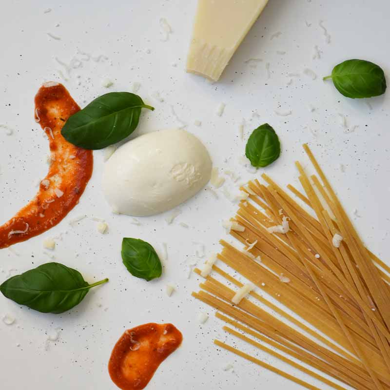
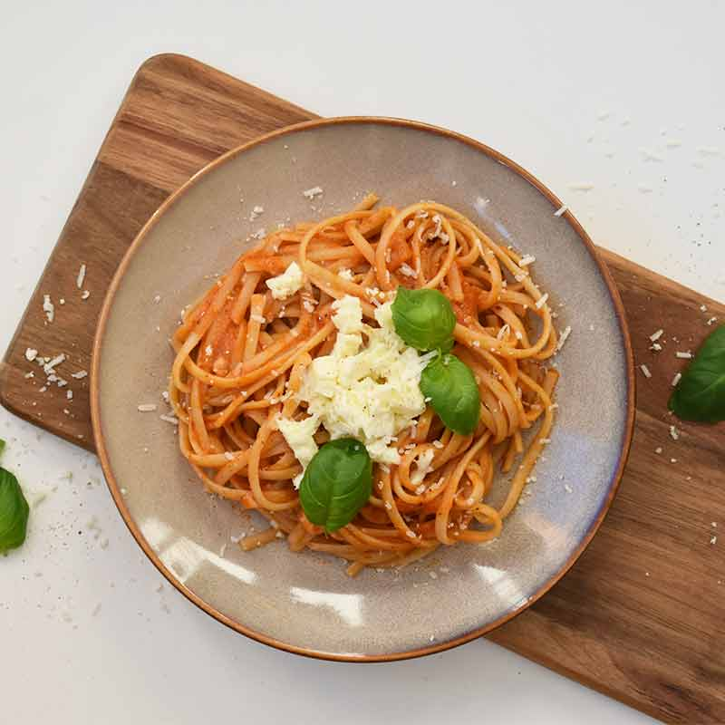

Pasta Pomodoro

Pasta Pomodoro er en italiensk pastaret som kan laves på få minutter - perfekt til de dage man ikke har tid til at lave mad.
Cremet pasta med tomatsauce og ost - kan det blive bedre?
Tid: 15 minutter. Antal: 2 personer.
Ingredienser:
Ingredienser:
- 250 g Pasta Fettuccine
- 2 tsk salt
- 500 g pastasauce
- 1 dl Pastavand
- salt og friskkværnet peber
- 30 g Parmesan, friskrevet
- 0,5 håndfuld frisk basilikum
- 1 stk mozzarellakugle

Fremgangsmåde:
- Kog pastaen i en gryde med salt og vand, i 2 min. mindre end angivet på pakken.
- Når pastaen er klar gemmes 1 dl af vandet og resten hældes fra.
- Kom pastaen tilbage i gryden og tilsæt pastasausen og parmasan.
- Kog yderligere 2-3 minutter indtil pastaen har en cremet konsistens.
- Anret pastaen med et godt drys frisk basilikum og frisk mozzarella.
